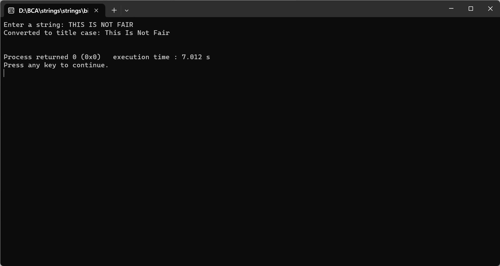

ENTER THE STRING FROM USER AND CONVERT INTO TITLE CASE
#include
#include
#include
void toTitleCase(char *str) {
int length = strlen(str);
int capitalize = 1; // Indicates the next character should be capitalized.
for (int i = 0; i < length; i++) {
if (isspace(str[i])) {
capitalize = 1; // If the character is a space, set the next character to be capitalized.
} else {
if (capitalize) {
str[i] = toupper(str[i]); // Capitalize the current character.
capitalize = 0; // Set back to lowercase for the next characters in the word.
} else {
str[i] = tolower(str[i]); // Convert other characters to lowercase.
}
}
}
}
int main() {
char input[1000];
printf("Enter a string: ");
fgets(input, sizeof(input), stdin);
toTitleCase(input);
printf("Converted to title case: %s\n", input);
return 0;
}
